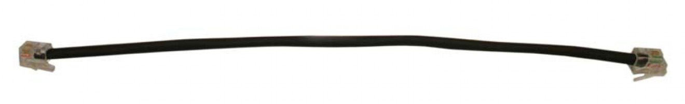

BACS Bus Communication Cable Technical Data and Parts
|  | Contacts | Twisted pair RJ10 |
| Certifications | UL, CSA and CE |
| Part Number | Part Name | Length |
|---|---|---|
| 0W49701 | BACS COMM. BUS CABLE RJ10 0.25M | 0.25 m (0.82 ft) |
| 0W49702 | BACS COMM. BUS CABLE RJ10 0.4M | 0.4 m (1.3 ft) |
| 0W49703 | BACS COMM. BUS CABLE RJ10 0.7M | 0.7 m (2.3 ft) |
| 0W49704 | BACS COMM. BUS CABLE RJ10 1M | 1 m (3.3 ft) |
| 0W49705 | BACS COMM. BUS CABLE RJ10 1.5M | 1.5 m (4.9 ft) |
| 0W49706 | BACS COMM. BUS CABLE RJ10 3M | 3 m (9.8 ft) |
| 0W49707 | BACS COMM. BUS CABLE RJ10 5M | 5 m (16 ft) |
| 0W49708 | BACS COMM. BUS CABLE RJ10 10M | 10 m (32.8 ft) |
| 0W49709 | BACS COMM. BUS CABLE RJ10 20M | 20 m (65.6 ft) |